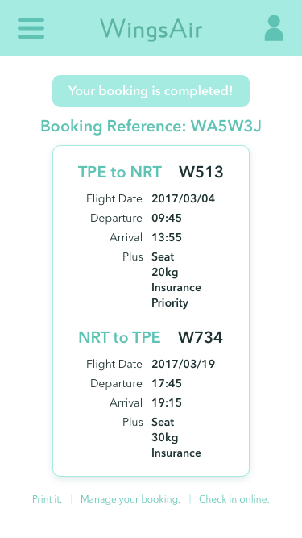

假設對象
依照背包客的習性來打造的廉價航空。
大多背包客購買機票的選擇以低價為優先，時間、地點較為彈性，
且少在航空網站加訂住宿，因配合的飯店即便有優惠價格仍偏高。
因此網站並無訂房的連結或推薦，能加速訂票流程、簡化頁面資訊。
搜索方式
１、與其他航空一樣有一般的搜索方式，也有多城市搜尋，能不同點進出。
２、地圖搜尋模式：在所輸入的出發點有抵達的城市下直接顯示價格，
直接進行城市比價，適用於地點尚未決定或較隨性的背包客。
３、最低價搜尋：由於每天機票價格都不同，顯示出月份的每日最低價格，
適用於以金錢為考量、時間較彈性的背包客。
提醒功能
選擇機票時，若在前後幾天、或臨近城市有更便宜的價格會提醒。
設計風格
以主色和大量白為主、扁平化的風格、版面也簡潔俐落，
除了主頁有推薦的旅行地點外，其他頁面無其他過多的資訊，
可加速訂票流程，防止分散背包客搜尋機票時的注意力。
語氣
網站所出現告知用戶的資訊都採用活潑的模式，
讓訂票體驗較輕鬆流暢，不會感覺緊張兮兮、害怕出錯。
首頁
首頁直接搜尋機票，Navigation Bar 及 Footer 有其他資訊；
左上為公司 Logo，右上為會員登入、語言切換、貨幣選擇。
Ａ：Banner 圖片是促銷資訊。
Ｂ：可切換至最低票價或地圖搜尋機票。
Ｃ：主動推薦地點，以圖片、價錢刺激背包客的想法及購買慾。
搜尋機票
顯示該日期含前後共四天的最低票價，底下再選擇當天航班。
左上為公司 Logo，右上為會員登入、語言切換、貨幣選擇。
Ｄ：將此航段加入我的最愛，方便之後搜尋。
Ｅ：此價位的位置快售完時出現提醒。
Ｆ：提醒鄰近日期、機場有更便宜的機票。
Ｇ：顯示飛行時間和與出發地的時差。
Ｈ：切換至當月每天的票價。
額外服務
選定機票後的額外加購服務，可加託運、選座位、買保險等，
已加購的服務為綠底及加購資訊；未加購則白底及價錢。
Ｉ：訂票流程，了解當下進度及剩下步驟。
Ｊ：欄位設計成正方形與添加示意圖，提高易讀性也容易點選。
加入會員／會員登入
購買機票須是會員，未加入者也可在此頁面選擇加入，
另也設計可用 Facebook 帳號來加快加入／登入會員的速度。
結帳
購買機票時不需護照號碼，讓買機票更快更簡單，
總價顯示在右上角，按下一步時能方便再確認。
Ｋ：機票詳細資訊，讓背包客確認購買時再次檢查，不必返回上一頁。
Ｌ：搭乘者資料若與會員資料相同即可打勾，節省時間。
購買完成
購買完成後出現訂單編號及機票詳細資訊，
底行為後續動作：列印、管理訂單、線上 Check in 的選項。
地圖搜尋
用地圖搜尋機票的畫面將輸入區移至左邊，右邊為航線大地圖，
機場所在城市的圓點依熱門度區分大小，較大的有顯示城市名。
地圖搜尋
輸入出發地後，可輸入目的地亦可從地圖選擇，
有抵達的才會顯示在地圖上，城市名底下顯示該日期最低票價。
Ｍ：出發地特別標示。
Ｎ：在有抵達的目的地中最低票價以紅色標示，吸引注意。
Ｏ：沒抵達的變成灰色，無法點選。
每月票價搜尋
時間彈性且以價錢為優先考量的背包客可用此功能，
以直方圖表示該航線的每月票價，遇假日會以粗體表示日期，
被選擇後會出現該日最低票價且底色變深。
手機版：首頁／搜尋機票
假設對象
依照背包客的習性來打造的廉價航空。
大多背包客購買機票的選擇以低價為優先，時間、地點較為彈性，
且少在航空網站加訂住宿，因配合的飯店即便有優惠價格仍偏高。
因此網站並無訂房的連結或推薦，能加速訂票流程、簡化頁面資訊。
搜索方式
１、與其他航空一樣有一般的搜索方式，也有多城市搜尋，能不同點進出。
２、地圖搜尋模式：在所輸入的出發點有抵達的城市下直接顯示價格，
直接進行城市比價，適用於地點尚未決定或較隨性的背包客。
３、最低價搜尋：由於每天機票價格都不同，顯示出月份的每日最低價格，
適用於以金錢為考量、時間較彈性的背包客。
提醒功能
選擇機票時，若在前後幾天、或臨近城市有更便宜的價格會提醒。
設計風格
以主色和大量白為主、扁平化的風格、版面也簡潔俐落，
除了主頁有推薦的旅行地點外，其他頁面無其他過多的資訊，
可加速訂票流程，防止分散背包客搜尋機票時的注意力。
語氣
網站所出現告知用戶的資訊都採用活潑的模式，
讓訂票體驗較輕鬆流暢，不會感覺緊張兮兮、害怕出錯。
首頁
首頁直接搜尋機票，Navigation Bar 及 Footer 有其他資訊；
左上為公司 Logo，右上為會員登入、語言切換、貨幣選擇。
Ａ：Banner 圖片是促銷資訊。
Ｂ：可切換至最低票價或地圖搜尋機票。
Ｃ：主動推薦地點，以圖片、價錢刺激背包客的想法及購買慾。
搜尋機票
顯示該日期含前後共四天的最低票價，底下再選擇當天航班。
左上為公司 Logo，右上為會員登入、語言切換、貨幣選擇。
Ｄ：將此航段加入我的最愛，方便之後搜尋。
Ｅ：此價位的位置快售完時出現提醒。
Ｆ：提醒鄰近日期、機場有更便宜的機票。
Ｇ：顯示飛行時間和與出發地的時差。
Ｈ：切換至當月每天的票價。
額外服務
選定機票後的額外加購服務，可加託運、選座位、買保險等，
已加購的服務為綠底及加購資訊；未加購則白底及價錢。
Ｉ：訂票流程，了解當下進度及剩下步驟。
Ｊ：欄位設計成正方形與添加示意圖，提高易讀性也容易點選。
加入會員／會員登入
購買機票須是會員，未加入者也可在此頁面選擇加入，
另也設計可用 Facebook 帳號來加快加入／登入會員的速度。
結帳
購買機票時不需護照號碼，讓買機票更快更簡單，
總價顯示在右上角，按下一步時能方便再確認。
Ｋ：機票詳細資訊，讓背包客確認購買時再次檢查，不必返回上一頁。
Ｌ：搭乘者資料若與會員資料相同即可打勾，節省時間。
購買完成
購買完成後出現訂單編號及機票詳細資訊，
底行為後續動作：列印、管理訂單、線上 Check in 的選項。
地圖搜尋
用地圖搜尋機票的畫面將輸入區移至左邊，右邊為航線大地圖，
機場所在城市的圓點依熱門度區分大小，較大的有顯示城市名。
地圖搜尋
輸入出發地後，可輸入目的地亦可從地圖選擇，
有抵達的才會顯示在地圖上，城市名底下顯示該日期最低票價。
Ｍ：出發地特別標示。
Ｎ：在有抵達的目的地中最低票價以紅色標示，吸引注意。
Ｏ：沒抵達的變成灰色，無法點選。
每月票價搜尋
時間彈性且以價錢為優先考量的背包客可用此功能，
以直方圖表示該航線的每月票價，遇假日會以粗體表示日期，
被選擇後會出現該日最低票價且底色變深。
手機版：首頁／搜尋機票
首頁調整排版，將搜尋方式改成 Tab 式的按鈕，且拿掉推薦地點，
原本的 Navigation Bar 及 Footer 縮至 Hamburger Menu 內，
而搜尋頁面將原本共四天價錢減少至只顯示該日期的前後各一天，
配合手機習慣的瀏覽方式，將價錢及下一步改至下面。
手機版：額外服務及結帳／購買完成

將原電腦版的額外服務及結帳畫面濃縮成一頁，
選完額外服務直接下滑輸入結帳資料，加速訂票流程。
Ｐ：採用橫向滾動的方式節省上下滾動空間。
手機版：Hamburger Menu／地圖搜尋
展開 Hamburger Menu 時會擋到航空名稱，因此保留 Logo 在左上角，
另外原本的所在畫面模糊化，減少干擾。
地圖搜尋頁面的輸入區塊設計成浮在地圖上方，且將部分多餘地圖截斷。
因空間限制，除了點的大小外，城市名字也出現大小區分。
Ｑ：若欲購買單程機票可直接點此關閉回程日期。
手機版：地圖搜尋／每月票價搜尋
輸入出發地後，頁面變化與電腦版雷同，
也有出發地特別標示及紅色代表最低價目的地，無法抵達的變灰色。
月份搜尋則放大直方圖，因此出現橫向滾動設計，
以保持來回票價能不需上下滾動就可同時查看。
Ｒ：月份選擇改成下拉式選單節省版面空間。
Ｓ：橫向滾動設計，完整顯示該月份的所有當日最低票價。